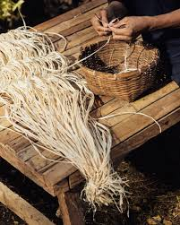
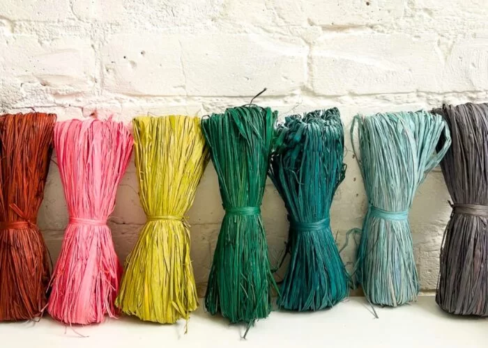
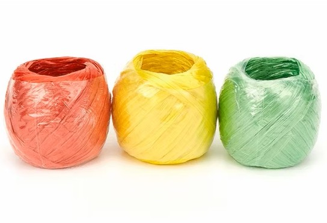
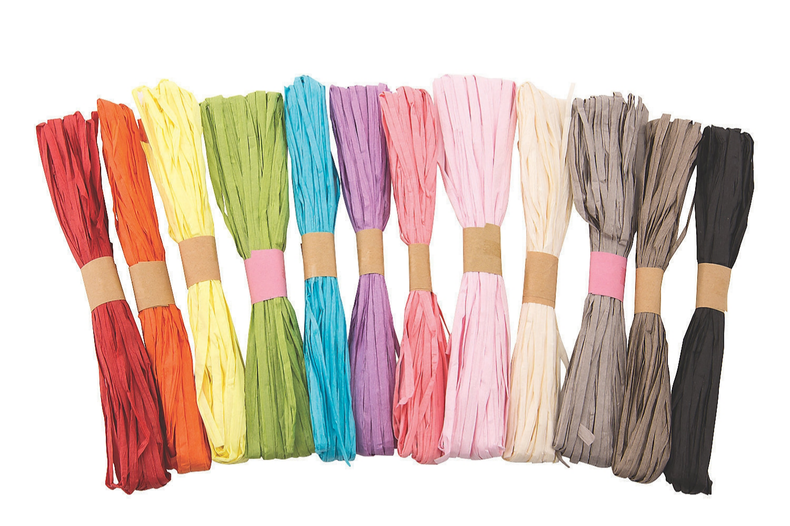

Raffia
Raffian is a lightweight yet durable woven material commonly used in the Philippines for handicrafts, fashion accessories, and packaging applications. It is typically derived from natural plant fibers, particularly from raffia palm leaves, which are carefully harvested, stripped, dried, and processed into long, flexible strands suitable for weaving. In many Filipino... communities, especially in provinces known for handicraft production, raffian serves as a primary material for creating bags, hats, mats, baskets, and decorative items. Its availability and ease of processing make it an accessible resource for small-scale industries and local artisans. The physical characteristics of raffian make it highly suitable for various practical and decorative purposes. It has a slightly coarse yet pliable texture that allows it to be braided, twisted, or woven without breaking easily. Naturally, it comes in neutral shades such as beige, cream, or light brown, giving it an earthy and organic appearance. However, it can also be dyed into vibrant colors to match contemporary design trends and consumer preferences. When tightly woven, raffian exhibits moderate tensile strength, allowing finished products to withstand regular handling and light loads. In the Philippine tropical climate, raffian performs well when properly processed and stored. The material is breathable and lightweight, which helps prevent heat buildup when used in wearable items like hats and bags. Although it can absorb moisture due to its natural fiber composition, proper drying and storage significantly improve its durability and longevity. Its flexibility also enables artisans to create intricate patterns and detailed craftsmanship, showcasing Filipino creativity and traditional weaving techniques. Beyond its functional properties, raffian is valued for its environmental sustainability and cultural significance. As a plant-based and biodegradable material, it serves as an eco-friendly alternative to synthetic plastics and non-biodegradable packaging materials. Its continued use supports local livelihoods and preserves traditional crafting skills passed down through generations. Overall, raffian remains an important material in the Philippines, combining practicality, sustainability, and cultural heritage in both everyday and decorative products.
Types of Raffia
Natural Raffia Fiber
Natural raffia fiber in the Philippines is derived from the leaves of the raffia palm, particularly the species Raphia farinifera. The long leaves are carefully harvested, stripped into thin fibers, and sun-dried to preserve their strength and flexibility. This process retains the material’s natural beige to light brown color, giving it an earthy and organic appearance that is highly valued in traditional Filipino crafts. Because it is plant-based, natural raffia is biodegradable and environmentally friendly, making it a sustainable alternative to synthetic materials.
This type of raffia is widely used in local handicrafts such as woven bags, hats, mats, and baskets. Filipino artisans prefer natural raffia for its authentic texture and its ability to hold intricate weaving patterns without easily breaking. When tightly woven, it provides moderate strength suitable for everyday items. Its breathable and lightweight quality also makes it comfortable for wearable products, especially in the tropical climate of the Philippines.
Dyed Raffia
Dyed raffia is natural raffia fiber that has undergone a coloring process using natural or synthetic dyes. After harvesting and drying, the fibers are immersed in dye solutions to achieve vibrant shades such as red, blue, green, yellow, and even pastel tones. This process enhances the visual appeal of the material while maintaining most of its original flexibility and texture. Dyed raffia allows artisans to experiment with creative and modern designs.
In the Philippines, dyed raffia is commonly used in fashion accessories, souvenir items, and decorative crafts. It is especially popular in tourist destinations where colorful handcrafted products are in demand. The bright hues make woven items more attractive and marketable, blending traditional weaving techniques with contemporary style. Despite being dyed, the material still maintains the lightweight and breathable properties of natural raffia.
Synthetic Raffia (Plastic Raffia)
Synthetic raffia, often referred to as plastic raffia, is manufactured from polypropylene or other plastic-based materials instead of plant fibers. Unlike natural raffia, it has a smoother texture and more uniform thickness. It is also more resistant to water, mold, and prolonged moisture exposure, making it highly durable for heavy-duty use. Synthetic raffia is typically mass-produced, ensuring consistent quality and availability.
In the Philippines, synthetic raffia is commonly used for packaging, tying agricultural products, and weaving market bags. It is popular in commercial and industrial settings because of its strength and affordability. Although it lacks the biodegradable quality of natural raffia, it provides greater resistance to wear and tear, especially in humid environments. Its practicality makes it widely used in both rural and urban areas.
Raffia Twine or Raffia String
Raffia twine or raffia string refers to raffia fibers that are processed into thinner strands or twisted into rope-like forms. These strands can be made from either natural or synthetic raffia. The twisting process increases the material’s tensile strength, making it suitable for binding and fastening purposes. It is flexible enough to be tied securely without easily snapping.
In the Philippines, raffia twine is frequently used for gift wrapping, floral arrangements, and decorative tying in events and celebrations. It is also utilized in agricultural settings for tying plants or bundling materials. Because of its simple yet rustic appearance, raffia twine is popular in eco-themed decorations and packaging. Its versatility makes it useful for both functional and ornamental applications.
Processed or Soft Raffia
Processed or soft raffia undergoes additional treatment to improve its smoothness and flexibility. This may involve soaking, conditioning, or refining the fibers to remove rough edges and enhance comfort. The result is a softer texture that is more suitable for wearable items. While it maintains the lightweight nature of traditional raffia, it feels gentler to the touch.
In the Philippines, soft raffia is often used in the production of hats, sandals, handbags, and other fashion accessories. Artisans prefer this type when creating items that come into direct contact with the skin. The improved texture allows for detailed craftsmanship without causing discomfort to users. This type of raffia combines traditional material qualities with enhanced usability for modern consumers.
Uses And Application of Raffia
Handicrafts and Weaving
In handicrafts and weaving, raffia is widely used to create baskets, mats, hats, bags, and decorative items. Its fibers are easy to weave and can be dyed in different colors, making it ideal for traditional and modern craft designs. Many local artisans prefer raffia because it is durable yet lightweight, allowing them to produce functional and attractive handmade products.
Decoration
In packaging and decoration, raffia is commonly used as an eco-friendly alternative to plastic ribbons and synthetic wrapping materials. It is often used in gift wrapping, floral arrangements, and event decorations because it gives a natural and rustic appearance. Its flexibility allows it to be tied securely while adding aesthetic value to packages and displays.
Fashion and Accessories
In fashion and accessories, raffia is used to make sandals, handbags, summer hats, belts, and even jewelry. Its breathable and lightweight qualities make it especially suitable for warm climates. Designers appreciate raffia for its natural texture and earthy look, which aligns with sustainable and environmentally friendly fashion trends.
Home and Furniture
In home and furniture applications, raffia is used for upholstery weaving, chair backing, lampshades, and decorative home accents. It adds a tropical and organic style to interior spaces. Because of its durability, raffia can withstand regular use while maintaining its visual appeal.
Wall Panel and Roof
In traditional construction, raffia has been used for roofing materials, wall weaving, and temporary shelters in rural communities. The large leaves of the raffia palm provide natural coverage and insulation, making them useful for building lightweight structures.
Arts
Finally, in arts and school projects, raffia is frequently used for DIY crafts, costume accessories, and classroom decorations. Students and teachers prefer raffia because it is affordable, easy to cut and shape, and safe to handle, making it a practical material for creative activities.